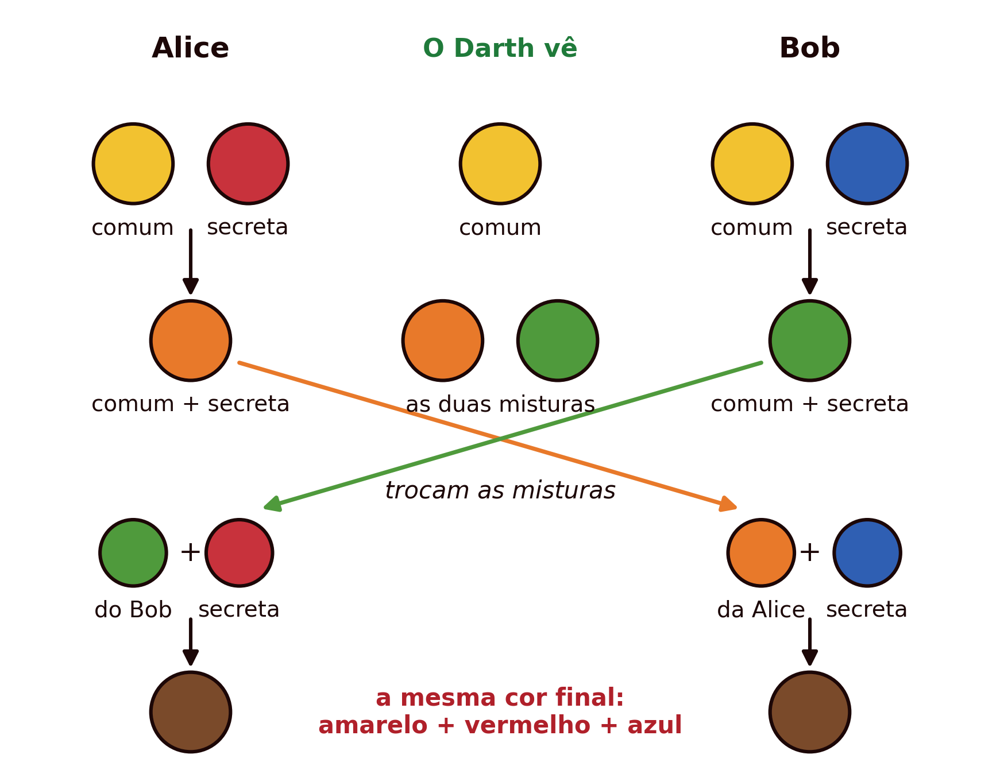
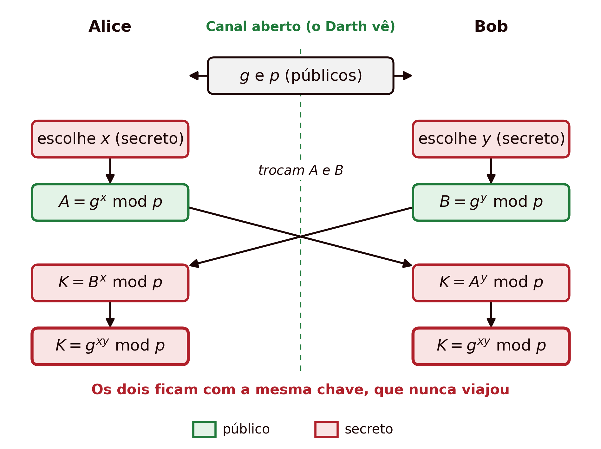
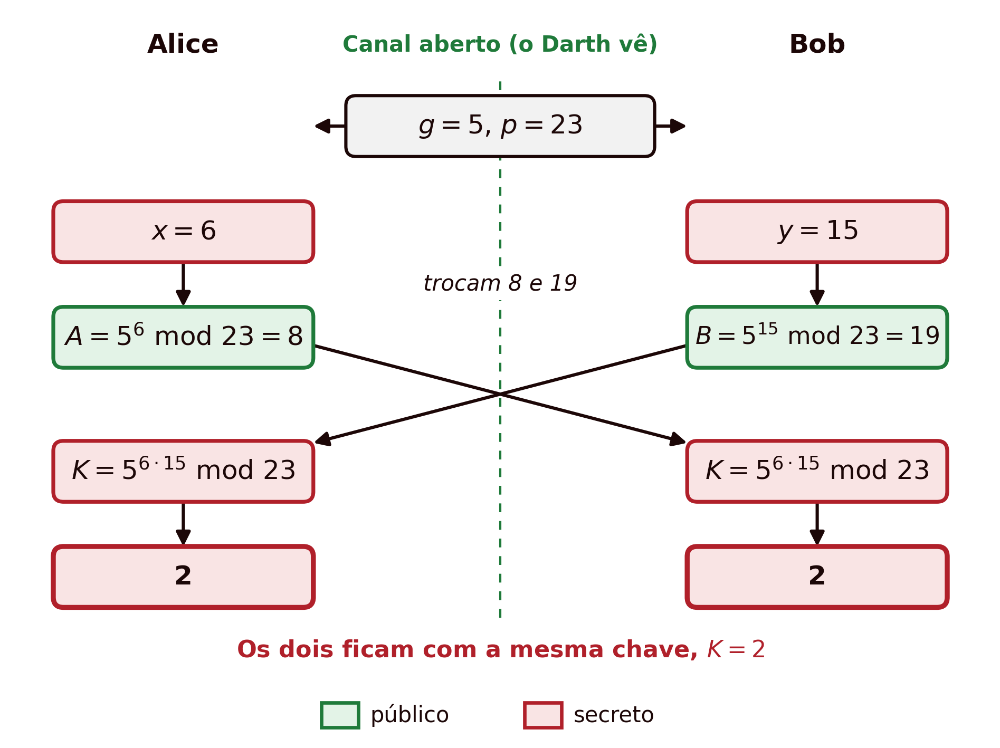
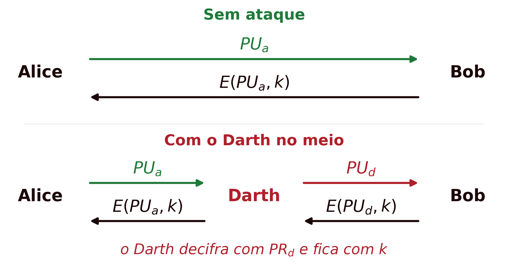
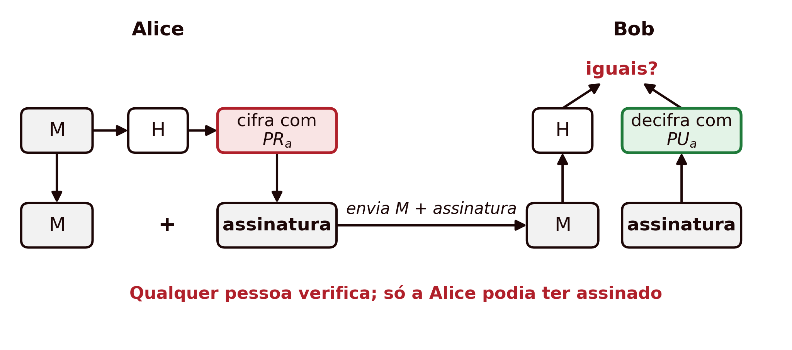
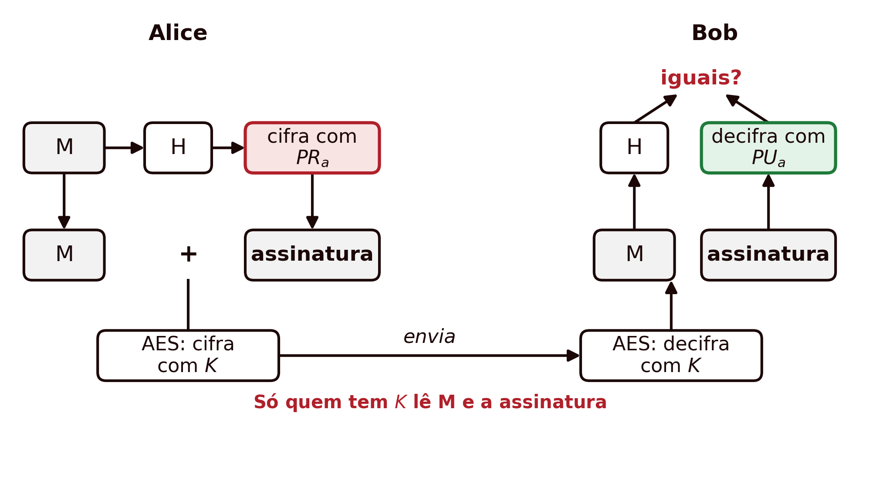
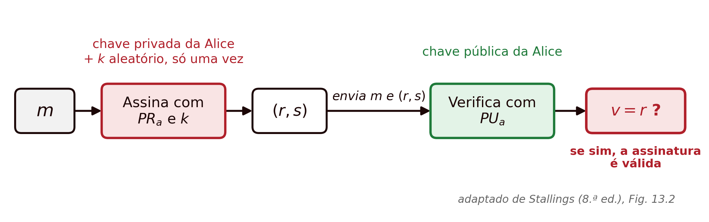
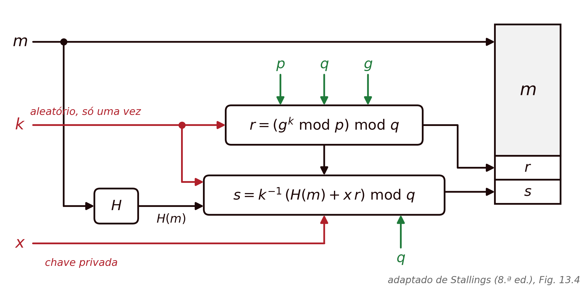
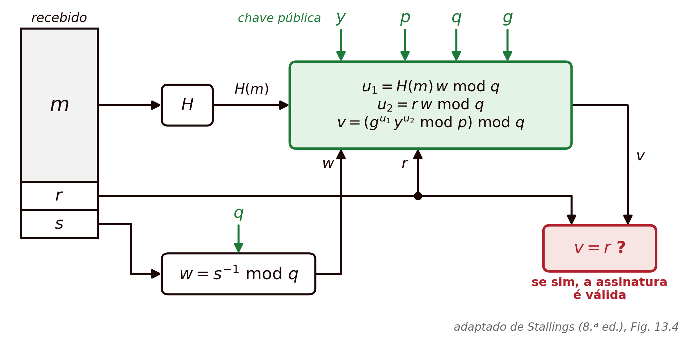
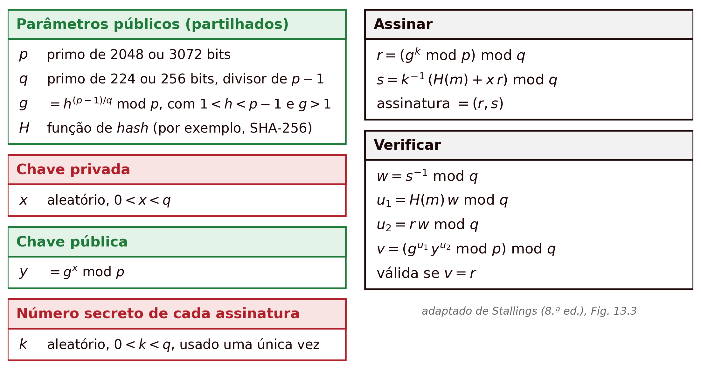

7 Diffie-Hellman e Assinaturas Digitais
Introdução
Com o RSA, a Alice gera uma chave \(K\) para o AES e envia-a ao Bob, cifrada com a chave pública dele. Funciona, mas \(K\) viaja pela rede, ainda que cifrada. Este capítulo trata de dois problemas diferentes que a criptografia de chave pública resolve. O primeiro é combinar uma chave secreta entre duas pessoas sem que essa chave alguma vez seja enviada: é o que faz o Diffie-Hellman. O segundo é provar, de forma que qualquer pessoa possa verificar, quem escreveu uma mensagem, sem que o autor possa depois negá-lo: é o papel das assinaturas digitais, com o RSA e com o DSA.
7.1 Combinar uma Chave sem a Enviar
O Diffie-Hellman (1976) funciona assim:
- A Alice e o Bob trocam mensagens à vista de todos.
- No fim, os dois calculam o mesmo número \(K\).
- \(K\) nunca é enviado: o Darth vê tudo o que passa e, mesmo assim, não o consegue calcular.
- \(K\) serve depois de chave para uma cifra simétrica, como o AES.
É um método de troca de chaves: não serve para cifrar mensagens nem para assinar.
A ideia percebe-se com tintas. A Alice e o Bob combinam em público uma cor comum, o amarelo. Cada um escolhe, em segredo, uma cor sua, junta-a ao amarelo e envia a mistura ao outro. No fim, cada um junta a sua cor secreta à mistura que recebeu, e os dois ficam com a mesma cor final, feita de amarelo e das duas cores secretas.

Misturar tintas é fácil; separar uma mistura nas cores de origem é praticamente impossível. O Darth vê o amarelo e as duas misturas, mas não consegue fazer a cor final, porque para isso precisava de uma das cores secretas.
7.2 A Matemática Necessária
Na matemática, o papel da “mistura” é feito por uma potência módulo um primo \(p\). Com \(p = 23\) e \(g = 5\):
| \(x\) | 1 | 2 | 3 | 4 | 5 | 6 | 7 | 8 | 9 | 10 | 11 |
|---|---|---|---|---|---|---|---|---|---|---|---|
| \(5^x \bmod 23\) | 5 | 2 | 10 | 4 | 20 | 8 | 17 | 16 | 11 | 9 | 22 |
| \(x\) | 12 | 13 | 14 | 15 | 16 | 17 | 18 | 19 | 20 | 21 | 22 |
| \(5^x \bmod 23\) | 18 | 21 | 13 | 19 | 3 | 15 | 6 | 7 | 12 | 14 | 1 |
Os resultados saltam de forma irregular, sem ordem aparente. O 5 é um gerador: as suas potências passam por todos os valores de 1 a 22 antes de se repetirem. Nem todos os números têm esta propriedade: as potências de 2, por exemplo, só dão 11 valores diferentes.
Sem módulo, desfazer uma potência é fácil. Se \(5^x = 390\,625\), como \(5^x\) cresce sempre, basta ir subindo até lá: \(5^8 = 390\,625\), logo \(x = 8\). É o logaritmo, \(x = \log_5 390\,625\).
Com módulo, a ordem desaparece. Se \(5^x \bmod 23 = 8\), o 8 não está “perto” de nenhum valor conhecido, e a única forma direta de encontrar \(x\) é experimentar \(x = 1, 2, 3, \ldots\) até acertar (\(x = 6\)).
| Sentido | Operação | Custo |
|---|---|---|
| Ida | dado \(x\), calcular \(g^x \bmod p\) | fácil (quadrados sucessivos) |
| Volta | dado \(g^x \bmod p\), descobrir \(x\) | inviável com \(p\) grande |
A volta chama-se problema do logaritmo discreto, e é nele que assenta a segurança do Diffie-Hellman.
7.3 O Algoritmo Diffie-Hellman

- Combinam-se, em público, um primo \(p\) e um gerador \(g\).
- A Alice escolhe um segredo \(x\); o Bob, um segredo \(y\).
- Trocam, em claro, \(A = g^x \bmod p\) e \(B = g^y \bmod p\): são as chaves públicas de cada um.
- Cada um eleva o valor recebido ao seu segredo e obtém o mesmo \(K\): a Alice calcula \(B^x \bmod p\) e o Bob \(A^y \bmod p\).
Com os números da Tabela 7.1, a Alice escolhe \(x = 6\) e o Bob \(y = 15\):

O 8 e o 19 leem-se diretamente na tabela. A Alice calcula \(19^6 \bmod 23\) e o Bob \(8^{15} \bmod 23\), por quadrados sucessivos, e os dois obtêm 2.
Os dois chegam ao mesmo número porque elevar uma potência a outra potência multiplica os expoentes, e a ordem da multiplicação não importa:
\[\text{Alice: } B^x = (g^y)^x = g^{yx} \qquad\qquad \text{Bob: } A^y = (g^x)^y = g^{xy}\]
No exemplo, \((5^{15})^6 = 5^{90}\) e \((5^6)^{15} = 5^{90}\), e reduzir módulo 23 pelo caminho não altera o resultado final. Como as potências de 5 se repetem de 22 em 22, o expoente 90 dá o mesmo que \(90 \bmod 22 = 2\), e \(5^2 \bmod 23 = 2\). O resultado comum é
\[K = g^{xy} \bmod p\]
A Alice nunca soube \(y\), o Bob nunca soube \(x\), e \(K\) nunca passou pela rede.
7.4 Segurança do Diffie-Hellman
| O Darth conhece | O Darth não conhece |
|---|---|
| \(p = 23\) e \(g = 5\) | \(x = 6\) |
| \(A = 8\) e \(B = 19\) | \(y = 15\) |
| o algoritmo | \(K = 2\) |
Com \(A\) e \(B\) não chega: multiplicá-los ou elevar um ao outro não dá \(K\). O Darth precisa de \(x\) ou de \(y\). Com \(p = 23\), o ataque é imediato:
- Experimenta \(5^1, 5^2, 5^3, \ldots \bmod 23\) até obter \(A = 8\), e encontra \(x = 6\) à sexta tentativa.
- Calcula \(K = B^x = 19^6 \bmod 23 = 2\), tal como a Alice.
São no máximo 22 tentativas: a segurança é nula. Na prática, \(p\) tem 2048 bits ou mais, e há expoentes a mais para os experimentar um a um. Mas, tal como na fatorização do RSA, existe um atalho: uma variante do General Number Field Sieve (GNFS) resolve o logaritmo discreto em tempo subexponencial, muito mais depressa do que experimentar todos os expoentes (Stallings 2020). Por isso, o Diffie-Hellman precisa de números do mesmo tamanho que o RSA para a mesma segurança:
| Segurança equivalente (bits) | 112 (3DES) | 128 | 192 | 256 |
|---|---|---|---|---|
| Primo \(p\) do Diffie-Hellman (bits) | 2048 | 3072 | 7680 | 15 360 |
O \(p\) e o \(g\) não precisam de ser gerados de novo em cada troca: usam-se grupos normalizados, publicados para toda a gente usar. O grupo ffdhe2048, por exemplo, tem um \(p\) de 2048 bits e \(g = 2\).
7.5 Diffie-Hellman no openssl
O openssl faz a troca completa com o grupo ffdhe2048:
$ openssl genpkey -algorithm DH -pkeyopt group:ffdhe2048 -out alice.pem
$ openssl genpkey -algorithm DH -pkeyopt group:ffdhe2048 -out bob.pem
$ openssl pkey -in alice.pem -pubout -out alice_pub.pem
$ openssl pkey -in bob.pem -pubout -out bob_pub.pem
$ openssl pkeyutl -derive -inkey alice.pem -peerkey bob_pub.pem | xxd -p | head -c 48
e0d709b889817a241db4f4c6116533e746119833b3128ca3
$ openssl pkeyutl -derive -inkey bob.pem -peerkey alice_pub.pem | xxd -p | head -c 48
e0d709b889817a241db4f4c6116533e746119833b3128ca3| Comando ou opção | Significado |
|---|---|
genpkey -algorithm DH -pkeyopt group:ffdhe2048 |
escolhe um segredo (\(x\) ou \(y\)) e calcula a chave pública (\(A\) ou \(B\)) com o \(p\) e o \(g\) do grupo ffdhe2048 |
-out alice.pem |
grava o segredo e a chave pública em alice.pem |
pkey -in alice.pem -pubout -out alice_pub.pem |
guarda à parte só a chave pública, a que se envia ao outro |
pkeyutl -derive -inkey alice.pem -peerkey bob_pub.pem |
a Alice calcula \(K = B^x \bmod p\) com o seu segredo e a chave pública do Bob |
xxd -p | head -c 48 |
mostra \(K\) em hexadecimal, só os primeiros 24 dos 256 bytes |
Os dois comandos -derive dão o mesmo \(K\), cada um do seu lado, sem que \(K\) tenha sido enviado.
7.6 O Ataque do Intermediário
Qualquer troca de chaves públicas tem uma fragilidade, que se vê bem num caso simples: a Alice envia ao Bob a sua chave pública \(PU_a\), e o Bob gera uma chave \(k\) para o AES e devolve-a cifrada, \(E(PU_a, k)\).

O Darth, num ponto da rede entre os dois (por exemplo, um router comprometido), interceta \(PU_a\) e entrega ao Bob, em vez dela, a sua própria chave pública, \(PU_d\). O Bob, sem saber, cifra \(k\) com \(PU_d\). O Darth decifra com a sua chave privada \(PR_d\), fica com \(k\), volta a cifrá-la com \(PU_a\) e entrega-a à Alice. Os dois continuam a comunicar, cifrando tudo com \(k\), sem saber que o Darth lê todas as mensagens.
É o ataque do intermediário (man-in-the-middle, MITM). No Diffie-Hellman, funciona da mesma forma: o Darth faz uma troca com a Alice e outra com o Bob, fica com uma chave combinada com cada um, e decifra e volta a cifrar tudo o que passa. O problema não está na matemática, que continua intacta, mas no facto de nenhum dos dois saber de quem é a chave pública que recebeu.
7.7 Assinaturas Digitais: o Conceito
Uma assinatura digital tem de garantir três coisas:
| Propriedade | Pergunta a que responde |
|---|---|
| Autenticação | Quem produziu a mensagem? |
| Integridade | A mensagem foi alterada depois de assinada? |
| Não repúdio | O autor pode negar que a assinou? |
O HMAC já dá as duas primeiras, mas não a terceira. A chave do HMAC é partilhada: a Alice e o Bob conseguem ambos calcular a marca. Se o Bob mostrar a um juiz uma mensagem com um HMAC válido, a Alice pode sempre dizer que foi o Bob quem a fez. Com uma chave privada, só a Alice podia ter assinado, e não há como negar.
7.7.1 Assinar o Hash

- A Alice calcula o hash da mensagem, \(H(M)\), e cifra-o com a sua chave privada: é a assinatura.
- Envia \(M\) e a assinatura, lado a lado.
- O Bob calcula \(H(M)\) sobre a mensagem que recebeu, decifra a assinatura com a chave pública da Alice e compara os dois valores: se forem iguais, a assinatura é válida.
Assina-se o hash e não a mensagem, porque o hash é curto, tem tamanho fixo, e o RSA é lento.
Neste esquema, \(M\) viaja em claro: qualquer pessoa a lê. A assinatura prova quem escreveu, mas não esconde nada. Se for preciso confidencialidade, cifra-se o conjunto (mensagem e assinatura) com uma cifra simétrica, como o AES, com uma chave \(K\) combinada entre os dois, por exemplo com o Diffie-Hellman:

7.7.2 Exemplo com o RSA
A Alice tem um par de chaves RSA com números pequenos: pública \((7, 187)\), privada \((23, 187)\). Para ser possível fazer as contas à mão, suponha-se que \(H(M) = 99\).
- A Alice assina com a chave privada: \(99^{23} \bmod 187 = 176\).
- Envia \(M\) e a assinatura, 176.
- O Bob calcula \(H(M) = 99\) sobre a mensagem recebida.
- Decifra a assinatura com a chave pública da Alice: \(176^{7} \bmod 187 = 99\).
- \(99 = 99\): a assinatura é válida.
Se o Darth alterar \(M\) pelo caminho, o hash muda (por exemplo, para 100) e deixa de bater certo com 99. Para criar uma assinatura nova para 100, o Darth precisaria de \(d = 23\), que só a Alice tem.
Na prática, usa-se o RSA-PSS (Probabilistic Signature Scheme), que junta aleatoriedade ao hash antes de assinar, pela mesma razão que o OAEP o faz ao cifrar: sem ela, a mesma mensagem dá sempre a mesma assinatura.
7.7.3 Assinar no openssl
O ficheiro ordem.txt contém “Transferir 100 euros para o Bob”. A Alice assina-o com uma chave RSA de 2048 bits, e o Bob verifica a assinatura antes e depois de alguém alterar o ficheiro:
$ openssl dgst -sha256 -sign alice_rsa.pem -sigopt rsa_padding_mode:pss \
-out ordem.sig ordem.txt
$ openssl dgst -sha256 -verify alice_rsa_pub.pem -sigopt rsa_padding_mode:pss \
-signature ordem.sig ordem.txt
Verified OK
$ echo "Transferir 900 euros para o Bob" > ordem.txt
$ openssl dgst -sha256 -verify alice_rsa_pub.pem -sigopt rsa_padding_mode:pss \
-signature ordem.sig ordem.txt
Verification failure| Comando ou opção | Significado |
|---|---|
dgst -sha256 -sign alice_rsa.pem |
calcula o SHA-256 do ficheiro e assina-o com a chave privada da Alice |
-sigopt rsa_padding_mode:pss |
usa o RSA-PSS |
-out ordem.sig ordem.txt |
grava a assinatura (256 bytes) em ordem.sig; o ficheiro assinado é ordem.txt |
-verify alice_rsa_pub.pem -signature ordem.sig |
verifica a assinatura com a chave pública da Alice |
echo "..." > ordem.txt |
altera o ficheiro: 100 passa a 900 |
\ no fim da linha |
o comando continua na linha seguinte |
Basta mudar um algarismo para que a verificação falhe: o hash do ficheiro alterado já não corresponde ao que foi assinado.
7.8 O DSA
O RSA serve para cifrar e para assinar. O DSA (Digital Signature Algorithm) foi desenhado só para assinar:
- baseia-se no mesmo problema do Diffie-Hellman, o logaritmo discreto;
- garante autenticação, integridade e não repúdio;
- foi normalizado em 1994 no DSS (Digital Signature Standard, norma FIPS 186);
- usa um número aleatório novo em cada assinatura, pelo que assinar duas vezes a mesma mensagem dá assinaturas diferentes.
A versão atual da norma, a FIPS 186-5, de 2023, já não aprova o DSA para criar assinaturas novas, só para verificar as antigas (National Institute of Standards and Technology 2023). A sua estrutura continua, no entanto, nos algoritmos que o substituíram, e é por isso que vale a pena percebê-la.
Visto de longe, o DSA tem a mesma forma da assinatura com o RSA: a Alice assina com a sua chave privada, e qualquer pessoa verifica com a chave pública dela.

Há duas diferenças. Entra um número aleatório \(k\), novo em cada assinatura, e a assinatura é um par de números, \((r, s)\). Além disso, a verificação não decifra nada: calcula um valor \(v\) a partir da mensagem, de \((r, s)\) e da chave pública, e compara-o com \(r\).
7.8.1 Assinar e Verificar
Dentro da caixa “Assina”, a Alice usa os parâmetros públicos \(p\), \(q\) e \(g\), a sua chave privada \(x\) e o número aleatório \(k\):

\(k^{-1}\) é o inverso de \(k\) módulo \(q\), o número que, multiplicado por \(k\), dá 1 módulo \(q\). O \(s\) tem de cumprir quatro exigências ao mesmo tempo: depender da mensagem, provar que se usou \(x\), não revelar \(x\) nem \(k\), e permitir a verificação a quem não conhece nenhum dos dois.
Do outro lado, o Bob só usa valores públicos: a mensagem, \((r, s)\), \(p\), \(q\), \(g\) e a chave pública \(y\) da Alice.

As contas reconstroem \(g^k\), e portanto \(r\), sem nunca conhecer \(k\) nem \(x\). Se a mensagem ou a assinatura tiverem sido alteradas, \(v\) sai diferente de \(r\). A Figura 7.10 junta num só quadro todos os valores e fórmulas.

Na prática, \(q\) tem 224 ou 256 bits e \(p\) tem 2048 ou 3072 bits. Os dois primos estão ligados: \(p - 1\) tem de ser múltiplo de \(q\). A razão desta ligação explica-se mais abaixo, na secção sobre o ciclo de \(q\) passos.
7.8.2 Exemplo com Números Pequenos
Os parâmetros saem da receita da Figura 7.10: \(q = 11\); \(p = 23\), porque \(22 = 2 \times 11\); com \(h = 2\), \(g = 2^{22/11} \bmod 23 = 2^2 = 4\). A Alice escolhe a chave privada \(x = 5\), que guarda só para si, e publica \(y = 4^5 \bmod 23 = 12\). Suponha-se \(H(m) = 4\).
A Alice assina com \(k = 8\):
- \(4^8 \bmod 23 = 9\), logo \(r = 9 \bmod 11 = 9\).
- \(k^{-1} = 7\), porque \(8 \times 7 = 56\) e \(56 \bmod 11 = 1\).
- \(s = 7 \times (4 + 5 \times 9) \bmod 11 = 343 \bmod 11 = 2\).
- A assinatura é \((r, s) = (9, 2)\).
O Bob verifica, só com a chave pública \(y = 12\):
- \(w = 2^{-1} \bmod 11 = 6\), porque \(2 \times 6 = 12\) e \(12 \bmod 11 = 1\).
- \(u_1 = 4 \times 6 \bmod 11 = 2\).
- \(u_2 = 9 \times 6 \bmod 11 = 10\).
- \(4^2 \times 12^{10} \bmod 23 = 16 \times 2 \bmod 23 = 9\).
- \(v = 9 \bmod 11 = 9 = r\): a assinatura é válida.
7.8.3 Porque Funciona a Verificação
Da fórmula de \(s\), multiplicando os dois lados por \(k\) e por \(w = s^{-1}\), tira-se
\[k = w\,(H(m) + x\,r) = u_1 + u_2\,x \pmod q\]
No exemplo, \(u_1 + u_2\,x = 2 + 10 \times 5 = 52\), e \(52 \bmod 11 = 8\), que é o \(k\) da Alice. Como \(y = g^x\), o Bob calcula, sem conhecer \(x\) nem \(k\),
\[g^{u_1} \times y^{u_2} = g^{u_1} \times g^{x\,u_2} = g^{u_1 + x\,u_2} = g^{k} \pmod p\]
e reduz o resultado módulo \(q\), obtendo exatamente o \(r\) da Alice. Esta passagem tem um pormenor: o expoente \(u_1 + x\,u_2\) foi calculado módulo \(q\), e não é o mesmo número que \(k\), apenas tem o mesmo resto na divisão por \(q\). Isso só basta porque o \(g\) do DSA foi escolhido de propósito para que as suas potências se repitam de \(q\) em \(q\).
7.8.4 Porque é Preciso um Ciclo de \(q\) Passos
Com \(p = 23\) e \(g = 4\), as potências de \(g\) repetem-se ao fim de poucos passos:
| \(i\) | 1 | 2 | 3 | 4 | 5 | 6 | 7 | 8 | 9 | 10 | 11 | 12 | 13 |
|---|---|---|---|---|---|---|---|---|---|---|---|---|---|
| \(4^i \bmod 23\) | 4 | 16 | 18 | 3 | 12 | 2 | 8 | 9 | 13 | 6 | 1 | 4 | 16 |
Ao fim de 11 passos sai o 1, e daí em diante tudo se repete. Num expoente, só interessa então o resto da divisão por 11: \(4^{12} \bmod 23 = 4 = 4^1\), porque \(12 \bmod 11 = 1\). Ao comprimento deste ciclo chama-se \(q\). Com um \(g\) qualquer, isto falha: o 5 da Tabela 7.1 só se repete ao fim de 22 passos, e \(5^{12} \bmod 23 = 18\), enquanto \(5^1 = 5\). Uma assinatura calculada com expoentes reduzidos módulo 11 e com \(g = 5\) nunca seria aceite.
O DSA precisa deste ciclo por três razões:
- Tamanho e rapidez. O \(p\) tem de ser grande, 3072 bits, para o logaritmo discreto ser difícil. O \(q\) pode ser muito mais pequeno, 256 bits. Como as contas da assinatura se fazem módulo \(q\), a assinatura tem \(2 \times 256 = 512\) bits, em vez de \(2 \times 3072 = 6144\). E os expoentes (a chave privada e o número aleatório) têm 256 bits em vez de 3072, o que faz cada potência cerca de 12 vezes mais rápida.
- Divisões. A assinatura usa \(k^{-1}\) e a verificação usa \(s^{-1}\). Estes inversos calculam-se módulo \(q\), e com \(q\) primo todos os números de 1 a \(q - 1\) têm inverso. Se o módulo fosse \(p - 1\), que é sempre par, metade dos números não teria inverso: módulo 22, por exemplo, 4 vezes qualquer número dá sempre um resultado par, nunca 1.
- Segurança. Se o comprimento do ciclo tiver fatores pequenos (como \(22 = 2 \times 11\)), o logaritmo discreto pode ser atacado por partes. O método de Pohlig-Hellman descobre primeiro o resto do segredo na divisão por cada fator pequeno, o que é rápido, e depois junta os pedaços. Com um ciclo de comprimento primo e grande, não há partes: o atacante tem de enfrentar o ciclo inteiro de \(q\) passos, e com \(q\) de 256 bits os melhores métodos genéricos precisam de cerca de \(2^{128}\) operações.
Resta ver porque é que a receita \(g = h^{(p-1)/q} \bmod p\) dá um ciclo de exatamente \(q\) passos:
- Pequeno teorema de Fermat. Se \(p\) é primo, para qualquer \(h\) entre 2 e \(p - 2\), \(h^{p-1} \bmod p = 1\). Com \(h = 2\): \(2^{22} \bmod 23 = 1\).
- O \(q\) desaparece. Elevar \(g\) a \(q\) multiplica os expoentes, e dividir por \(q\) e multiplicar por \(q\) anulam-se: \(g^q = \left(h^{(p-1)/q}\right)^q = h^{p-1}\). No exemplo, \(4^{11} = (2^2)^{11} = 2^{22}\).
- O ciclo fecha. Logo \(g^q \bmod p = 1\), e ao fim de \(q\) passos sai o 1: \(4^{11} \bmod 23 = 1\), como na Tabela 7.8.
- Porque \(q\) é primo. O ciclo de \(g\) tem de caber um número inteiro de vezes em \(q\). Se \(q\) é primo, o ciclo só pode ter \(q\) passos, ou 1 passo quando \(g = 1\). É por isso que, se sair \(g = 1\), se troca de \(h\).
7.9 Nunca Reutilizar \(k\)
O número \(k\) tem de ser secreto e novo em cada assinatura. Suponha-se que a Alice assina duas mensagens com o mesmo \(k = 8\): \(H(m_1) = 6\) dá \((9, 5)\) e \(H(m_2) = 4\) dá \((9, 2)\). Como \(r = (g^k \bmod p) \bmod q\) só depende de \(k\), o \(r\) repete-se, e o Darth repara nisso:
- Subtrai as duas equações de \(s\). O termo \(x\,r\) é igual nas duas e desaparece: \[s_1 - s_2 = k^{-1}\,(H(m_1) - H(m_2)) \bmod q\]
- Isola \(k\): \(k = (H(m_1) - H(m_2)) \times (s_1 - s_2)^{-1} \bmod q\). Com os números do exemplo, \(6 - 4 = 2\) e \(s_1 - s_2 = 3\), cujo inverso é 4, porque \(3 \times 4 = 12\) e \(12 \bmod 11 = 1\). Logo, \(k = 2 \times 4 \bmod 11 = 8\).
- Isola \(x\): \(x = (s_1\,k - H(m_1)) \times r^{-1} \bmod q\). O inverso de \(r = 9\) é 5, porque \(9 \times 5 = 45\) e \(45 \bmod 11 = 1\); então \(x = (5 \times 8 - 6) \times 5 \bmod 11 = 170 \bmod 11 = 5\).
Duas assinaturas com o mesmo \(k\) entregam a chave privada.
Este ataque não é só teórico. A PlayStation 3 só executava programas assinados pela Sony, com o ECDSA, uma variante do DSA com a mesma estrutura de \(r\), \(s\) e \(k\). A implementação da Sony usava sempre o mesmo \(k\), em vez de um número aleatório novo para cada assinatura. Em 2010, o grupo fail0verflow reparou que assinaturas diferentes tinham o mesmo \(r\) e fez exatamente estas contas. Com a chave privada da Sony, passou a ser possível assinar qualquer programa como se fosse da Sony, e a consola executava-o. O algoritmo estava certo; bastou um erro na implementação.
7.10 Depois do DSA
Os algoritmos que substituíram o DSA mantêm a sua estrutura de \(r\), \(s\) e \(k\), e corrigem os seus dois defeitos: os números enormes (o \(p\) do DSA precisa de 3072 bits para ser seguro) e a dependência do número aleatório \(k\), que, se se repetir ou for previsível, expõe a chave privada.
| Substituto | O que corrige |
|---|---|
| ECDSA | Faz as mesmas contas sobre curvas elípticas, onde o logaritmo discreto é mais difícil: chegam 256 bits em vez de 3072. Continua a precisar de um \(k\) aleatório em cada assinatura, e foi por isso que a PlayStation 3 caiu |
| EdDSA (Ed25519) | Também sobre curvas elípticas, mas o \(k\) deixa de ser aleatório: é calculado a partir da chave privada e da mensagem. A mesma mensagem dá sempre o mesmo \(k\), mensagens diferentes dão \(k\) diferentes, e uma falha do gerador aleatório já não expõe a chave |
Os dois são aprovados pela norma FIPS 186-5, a par do RSA (National Institute of Standards and Technology 2023).
7.11 Síntese do Capítulo
- O Diffie-Hellman permite combinar uma chave \(K = g^{xy} \bmod p\) em público, sem que \(K\) alguma vez viaje
- A segurança assenta no logaritmo discreto: calcular \(g^x \bmod p\) é fácil, descobrir \(x\) é inviável com \(p\) de 2048 bits ou mais
- Sem saber de quem é a chave pública recebida, qualquer troca de chaves, incluindo o Diffie-Hellman, cai perante um intermediário (MITM)
- Uma assinatura digital dá autenticação, integridade e não repúdio, que o HMAC não dá
- Assina-se o hash da mensagem com a chave privada; verifica-se com a chave pública. Com o RSA, usa-se o RSA-PSS
- O DSA assina com a chave privada \(x\) e um número \(k\) aleatório, e produz o par \((r, s)\); as contas fazem-se módulo \(q\), o comprimento do ciclo das potências de \(g\)
- Reutilizar \(k\) entrega a chave privada; o ECDSA reduz o tamanho dos números e o EdDSA elimina a dependência do gerador aleatório
7.12 Para Pensar
Para travar o ataque do intermediário, o Bob podia assinar o seu valor \(B = 19\) antes de o enviar, e a Alice verificaria a assinatura com a chave pública do Bob. Isto resolve o problema? O que tem a Alice de saber, antes de começar, para que a verificação sirva de alguma coisa?